Движение - жизнь!
БИЧ человечества - это ИЛЛЮЗИЯ выбора и ГИПОДИНАМИЯ В 95% случаев чем бы не занялся подопечный, если он до этого мало двигался, ему станет намного лучше (но возможно в краткосрочной перспективе!). В мире более 1,4 миллиарда человек ведут сидячий образ жизни. В России — около 20 миллионов или 17 % взрослого населения!
При переутомлении дополнительная физическая нагрузка (занятия в зале, танцы и т.д) будет приводить к нарушениям здоровья.
- Подниматься и спускаться пешком по лестнице, не пользоваться лифтом.
- Регулярно заниматься уборкой (уборка большой квартиры или дома - отличная тренировка)
- Находясь дома, включать энергичную музыку (автоматически будете двигаться больше).
- Если есть дети, чаще включать их в активные игры.
- Заведите будильник на каждый час, вставать на 5 минут: ходить, танцевать, приседать, совершать любую приятную двигательную активность.
- Отслеживать свою активность с помощью приложений (шагомер, фитнестрекер, трекер привычек) - это повышает уровень осознанности и ответственности.
Лайфхаки - как повысить уровень физической активности?
